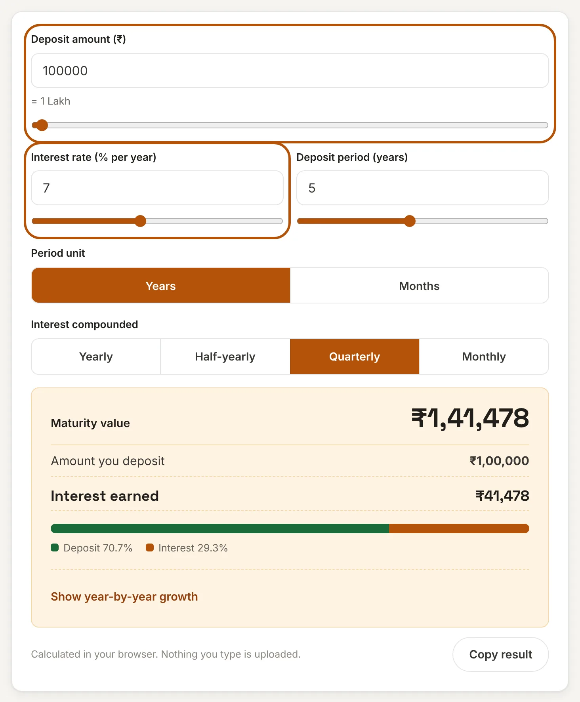
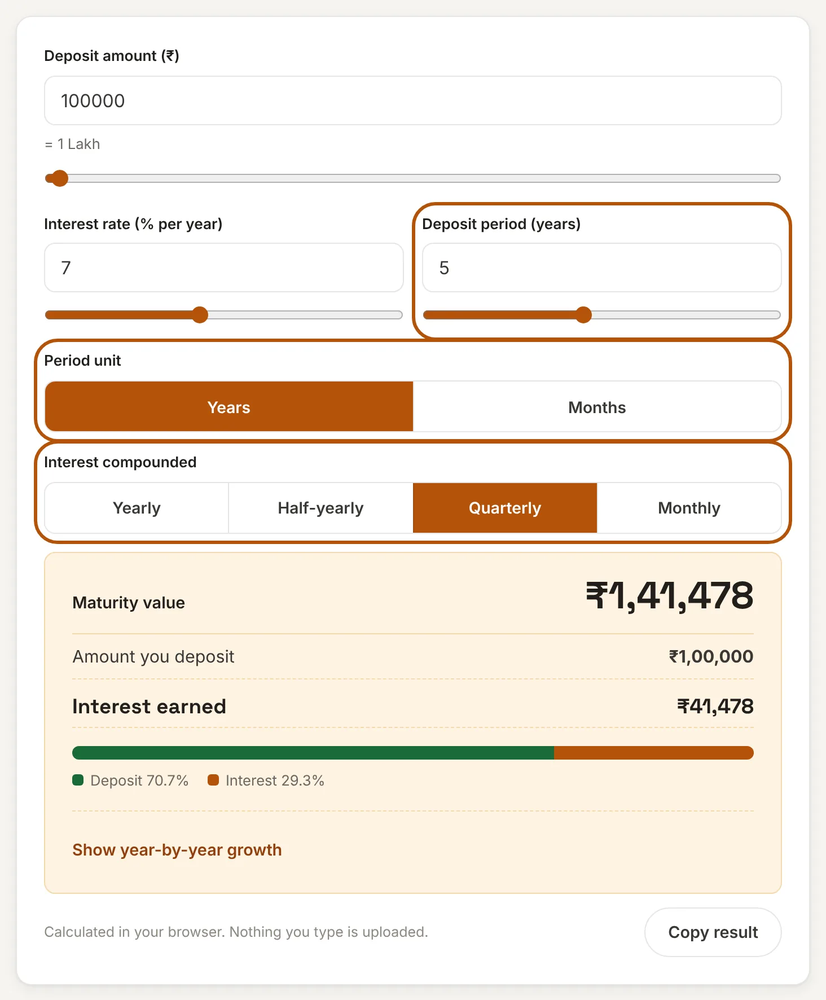
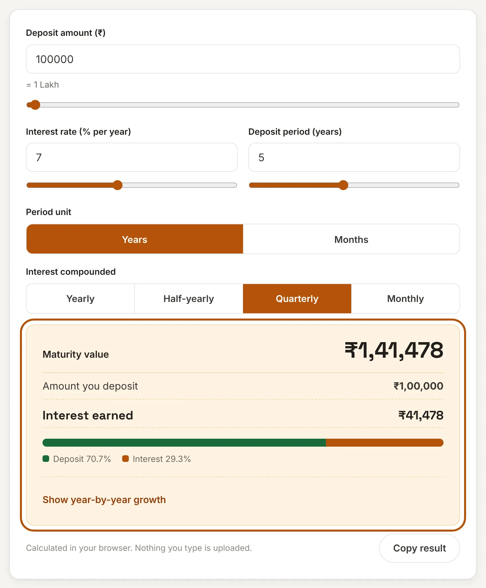
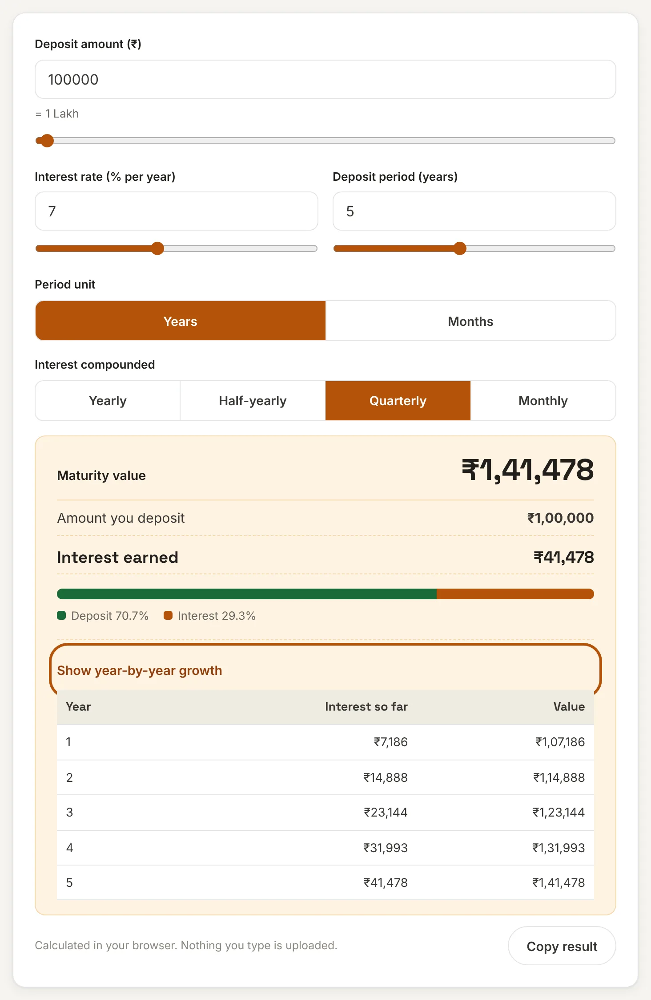

What is a fixed deposit?
A fixed deposit (FD) is a savings product offered by banks and some finance companies. You deposit a lump sum for a fixed period at an interest rate that is agreed on the day you open the FD. Because the rate is fixed, you know in advance what the deposit will earn, which is why FDs are popular with people who want predictable and low-risk returns.
FDs come in two common forms. In a cumulative FD the interest is added back to the deposit and paid together with the principal at maturity, so you earn interest on interest. In a non-cumulative FD the interest is paid out regularly, for example every month or quarter. This calculator is for cumulative FDs.
How to use this FD calculator
Four quick steps show the maturity value of your deposit. Each step below shows what you will see on the calculator above.
Step 1: Enter the deposit amount and the interest rate
Type the amount you plan to deposit, or drag the slider. The calculator writes it in thousands, lakhs or crores underneath so you can spot a wrong number of zeros. Then enter the yearly interest rate your bank offers for the period you have chosen. Rates differ by bank and by period, so use the rate quoted on the bank's website or at the branch.

Step 2: Choose the period and how interest is compounded
Enter the length of the deposit in years, or switch to Months for shorter FDs such as 18 months. Then choose how often interest is added to the deposit. Most banks compound quarterly, which is the default here. Your bank's FD terms will say if it is different.

Step 3: Read the maturity value
The maturity value appears at the top. Below it you can see your deposit and the interest earned. The coloured bar shows how much of the final amount is your own money and how much is interest. Use Copy result to paste the summary into a message or a spreadsheet.

Optional: see the growth year by year
Select Show year-by-year growth to see the interest earned so far and the value of the FD at the end of each year. This helps if you want to know what the deposit is worth if you break it early or plan to renew it.

FD maturity formula
Here A is the maturity value, P is the deposit, r is the annual interest rate in percent, m is the number of times interest is compounded in a year (1, 2, 4 or 12) and t is the period in years. Interest earned is A − P.
Worked example: P = ₹1,00,000, r = 7%, quarterly compounding (m = 4) for 5 years (t = 5). Then A = 1,00,000 × (1 + 0.07 ÷ 4)20 = 1,00,000 × 1.4148 = ₹1,41,478, so the interest is ₹41,478.
FD examples
| Deposit | Rate | Period | Maturity value | Interest earned |
|---|---|---|---|---|
| ₹1,00,000 | 7% | 5 years | ₹1,41,478 | ₹41,478 |
| ₹5,00,000 | 7.5% | 3 years | ₹6,24,858 | ₹1,24,858 |
| ₹10,00,000 | 6.8% | 2 years | ₹11,44,373 | ₹1,44,373 |
| ₹2,00,000 | 7.25% | 10 years | ₹4,10,274 | ₹2,10,274 |
All examples use quarterly compounding and sample rates. Actual rates change often and depend on the bank, the period and sometimes your age.
How compounding changes the maturity value
The more often interest is added, the more you earn, because interest starts earning interest sooner. The table uses ₹1,00,000 at 7% for 5 years.
| Compounding | Maturity value |
|---|---|
| Yearly | ₹1,40,255 |
| Half-yearly | ₹1,41,060 |
| Quarterly | ₹1,41,478 |
| Monthly | ₹1,41,763 |
The gap between yearly and monthly is about ₹1,500 on ₹1,00,000 over 5 years. It is small compared with the effect of the rate or the period, but it is worth checking when two banks offer the same rate.
How the period changes your interest
| Period | Maturity value | Interest earned |
|---|---|---|
| 1 year | ₹1,07,186 | ₹7,186 |
| 2 years | ₹1,14,888 | ₹14,888 |
| 3 years | ₹1,23,144 | ₹23,144 |
| 5 years | ₹1,41,478 | ₹41,478 |
| 7 years | ₹1,62,541 | ₹62,541 |
| 10 years | ₹2,00,160 | ₹1,00,160 |
This is ₹1,00,000 at 7%, compounded quarterly. Over 10 years the deposit doubles. The interest in the second five years (₹58,682) is higher than in the first five (₹41,478) because the interest earned earlier keeps earning too.
Compound interest and simple interest
With simple interest, you earn interest only on the original deposit. ₹1,00,000 at 7% for 5 years would give ₹35,000 of interest and a total of ₹1,35,000. With quarterly compounding the same FD gives ₹41,478, which is ₹6,478 more. Cumulative FDs use compound interest, so use a compound calculation like this one to estimate what you will receive.
Comparing options? A SIP Calculator shows how a market-linked investment could grow, the PPF Calculator covers a government-backed savings scheme, and the Income Tax Calculator helps you estimate tax on the interest.
Frequently asked questions
How is FD interest calculated?
For a cumulative FD, the maturity value is A = P × (1 + r ÷ (100 × m))^(m × t), where m is the number of compounding periods per year. For ₹1,00,000 at 7% for 5 years with quarterly compounding, A is ₹1,41,478.
Does quarterly or monthly compounding give more?
Monthly compounding gives slightly more than quarterly at the same rate, because interest is added to the deposit more often. On ₹1,00,000 at 7% for 5 years, monthly compounding gives ₹1,41,763 and quarterly gives ₹1,41,478.
What is the difference between a cumulative and a non-cumulative FD?
In a cumulative FD, interest is added to the deposit and paid at maturity. In a non-cumulative FD, interest is paid out at regular intervals and the principal stays the same. This calculator is for cumulative FDs.
Is FD interest taxable?
Yes, FD interest is added to your income and taxed at your slab rate, and banks may deduct TDS in some cases. The figures here are before tax. Check the current rules or ask a tax adviser.
Will my bank's maturity amount match this calculator exactly?
It should be very close. Banks may round at each step, use days instead of months for part periods, or follow their own compounding rules, so a small difference is normal. Your FD receipt shows the exact maturity amount.
Is my data sent to a server?
No. This calculator runs entirely in your browser. The amounts you enter are never uploaded or stored.
Disclaimer: This calculator gives estimates for convenience and is not financial advice. Check final figures and current rates with your bank. See our disclaimer.